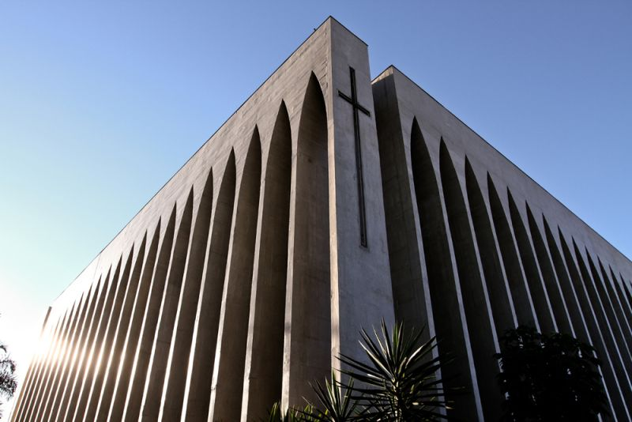

<!DOCTYPE html>
<html lang="pt-br">
<head>
<title>Pontos Turísticos de Brasília</title>
<meta charset="utf-8">
<meta name="viewport" content="width=device-width, initial-scale=1">
</head>

<head>

  
</html>


<style>


* {
  box-sizing: border-box;
}

body {
  margin: 0;
}

/* Style the header */


.header {
  background-color: #f1097d;
  padding: 30px;
  text-align: center;
}


/* Style the top navigation bar */
.topnav {
  overflow: hidden;
  background-color: #333;
}

/* Style the topnav links */
.topnav a {
  float: left;
  display: block;
  color: #f2f2f2;
  text-align: center;
  padding: 14px 16px;
  text-decoration: none;
}


/* Change color on hover */
.topnav a:hover {
  background-color: #ddd;
  color: black;
}

</style>
</head>

<head>
  <div class="header">
   
    <p class="paragraph">Pontos Turisticos de Brasília.<br> Vamos conhecer alguns?</p>
    <p>Clicando nos links abaixo, vc será redicionado a outros Pontos Turisticos do DF e entorno.</p>
  </div>


<div class="topnav">
  
  <a target="_blank" href="https://www.agenciabrasilia.df.gov.br/2021/06/27/guara-uma-cidade-com-grande-potencial-turistico-a-explorar/"> GUARÁ </a>
  <a target="_blank" href="https://www.guiadoturismobrasil.com/cidade/DF/339/taguatinga"> TUAGATINGA </a>
  <a target="_blank" href="https://www.agenciabrasilia.df.gov.br/2021/03/27/ceilandia-50-anos-de-tradicoes-e-pontos-turisticos/">CEILANDIA</a>
  <a target="_blank" href="https://www.agenciabrasilia.df.gov.br/2022/10/12/rota-turistica-de-brazlandia-oferece-atrativos-para-todos-os-gostos/">BRAZLANDIA</a>
  <a target="_blank" href="https://www.agenciabrasilia.df.gov.br/2021/07/31/paranoa-entra-na-rota-dos-destinos-turisticos-do-df/"> PARANOÁ</a>
  <a target="_blank" href="https://www.agenciabrasilia.df.gov.br/2021/04/30/sobradinho-ganha-centro-de-atendimento-ao-turista/"> SOBRADINHO</a>
  <a target="_blank" href="https://agenciabrasilia.df.gov.br/2022/10/04/conheca-a-rota-turistica-de-planaltina-a-cidade-mais-antiga-do-df/">PLANALTINHA</a>
  <a target="_blank" href="https://www.pirenopolis.com.br/passeios-atividades">PERINÓPOLIS/GO</a>
  <a target="_blank" href="https://www.icmbio.gov.br/parnachapadadosveadeiros/quem-somos/localizacao.html">CHAPADA DOS VEADEIROS/GO</a>
  <a target="_blank" href="https://www.guiaturisticodegoias.com.br/cidades-turisticas/23-formosa/atracoes-turisticas/73-buraco-das-araras">BURACO DAS ARARAS</a>
  <a target="_blank" href="https://www.pontao.com.br/o-pontao/o-pontao/">PONTÃO SUL</a>
  <a target="_blank" href="https://www.metropoles.com/gastronomia/comer/df-7-locais-para-comer-picanha-eleita-segundo-melhor-prato-do-mundo">MELHORES CHURSCARIAS</a>
  <a target="_blank" href="https://www.df.gov.br/eventos-no-parque-da-cidade-sarah-kubitschek/">PARQUE DA CIDADE</a>
  <a target="_blank" href="https://guiaviajarmelhor.com.br/bares-em-brasilia-25-opcoes-indicadas-por-turistas-e-moradores/">MELHORES BARES DE BRASÍLIA</a>
</div>
</head>
  
</body>

<style>
* {
  box-sizing: border-box;
}

body {
  margin: 10;
}

@import url("https://fonts.googleapis.com/css2?family=Gluten:wght@100;300;400;500&display=swap");

:root {
   font-size: 72.5%;
}

/* Style the header */
.header {
 
  background: #007991;
   background: -webkit-linear-gradient(to right bottom, #78ffd6, #007991);
   background: linear-gradient(to right bottom, #78ffd6, #007991);
  padding: 20px;
  text-align: center;
}

.paragraph {
   font-size: 3rem;
   line-height: 1.2;
   font-weight: 500;
   text-align: center;
   color: #c4042e;
   cursor: pointer;
   transition: all 0.45s;

}

.paragraph:hover {
   text-shadow: 0 0.5rem 2rem rgba(233, 59, 59, 0.4);
   transform: scale(1.4);
   transition: all 0.6s;
}

/* Style the top navigation bar */
.topnav {
  overflow: hidden;
  background-color: #98ecd3;
}

/* Style the topnav links */
.topnav a {
  float: left;
  display: block;
  color: #0a0eee;
  text-align: center;
  padding: 14px 16px;
  text-decoration: none;
}

/* Change color on hover */
.topnav a:hover {
  background-color: #ddd;
  color: rgb(172, 9, 9);
}


    div.gallery {
      border: 1px solid #ccc;
    }
    
    div.gallery:hover {
      border: 1px solid #777;
    }
    
    div.gallery img {
      width: 100%;
      height: auto;
    }
    
    div.desc {
      padding: 15px;
      text-align: center;
    }
    
    * {
      box-sizing: border-box;
    }
    
    .responsive {
      padding: 0 6px;
      float: left;
      width: 24.99999%;
    }
    
    @media only screen and (max-width: 700px) {
      .responsive {
        width: 49.99999%;
        margin: 6px 0;
      }
    }
    
    @media only screen and (max-width: 500px) {
      .responsive {
        width: 100%;
      }
    }
    
    .clearfix:after {
      content: "";
      display: table;
      clear: both;
    }


   
    </style>


<body>

  <section>
    <div class="face">
      <div class="front">
        <h2>Obs.:</h2>
        <p>Neste site, mostraremos de maneira didática, pontos importantes sobre nosso Quadradinho. Começaremos por Brasília e daremos uma volta pelas Cidades Satélites.</p>
      
      </div>
      <div class="back">
        
        <p>Assim, daremos uma volta rápida pelo DF, mas te deixnao curioso para novas aventuras. Vmaos lá!</p>
      </div>
  
  </section>  

</body>
<style>


  {
    margin: 0;
    box-sizing: border-box;
  }
  
  html {
    font-family: Cambria, Cochin, Georgia, Times, 'Times New Roman', serif;
    font-size: 10px;
  }
  
  body {
    background: #eb8f8f;
  }
  
  section {
    width: 40px;
    margin: 30px;
    
  }
  .face {
    width: 300px;
    height: 150px;
    perspective: 700px;
  }
  
  .front, .back {
    position: absolute;
    width: 100%;
    height: 100%;
    padding: 10px;
    border-radius: 10px;
    transition: 1000ms;
  }
  
  .front {
    background: rgb(236, 85, 193);
    z-index: 1;
    font-size: 15px;
  }
  
  .back {
    background: lightslategray;
    transform: rotateY(-180deg);
    backface-visibility: visible;
    background-image: url(exemploFlipCard/cafe.jpg);
    background-size: cover; 
    font-size: 17px;
  }
.face:hover .front {
    transform: rotateY(180deg);
    z-index: 0;
  }
  
  .face:hover .back {
    transform: rotateY(0);
    z-index: 1;
  }

h4 , h7{font-size: 15px;
}
</html>


</style>


<body>
  
    <h2>Não deixe de buscar conhecimento. </h2>
    
    <h4>O saber é muito bom, e é gostoso conhecer nossa história.</h4>
    
    <div class="responsive">
      <div class="gallery">
        <a target="_blank" href="https://www.congressonacional.leg.br/">
          
        </a>
        <div class="desc">Clique na imagem, para conhecer um pouco mais.</div>
      </div>
    </div>
    
    
    <div class="responsive">
      <div class="gallery">
        <a target="_blank" href="https://catedral.org.br/">
          
        </a>
        <div class="desc">Clique na imagem, para conhecer um pouco mais.</div>
      </div>
    </div>
    
    <div class="responsive">
      <div class="gallery">
        <a target="_blank" href="https://www.df.gov.br/museu-do-catetinho-2/">
          
        </a>
        <div class="desc">Clique na imagem, para conhecer um pouco mais.</div>
      </div>
    </div>
    
    <div class="responsive">
      <div class="gallery">
        <a target="_blank" href="https://www.vice.df.gov.br/ponte-juscelino-kubitschek-ou-terceira-ponte/">
          
        </a>
        <div class="desc">Clique na imagem, para conhecer um pouco mais.</div>
      </div>
    </div>
    
    <div class="clearfix"></div>
    
    <div style="padding:6px;>
      <p>Estes são alguns dos PONTOS TURÍSTICOS mais visitado no nosso "QUADRADINHO";</p>
      
      <p> Continue viajando pelos nossos pontos turísticos, busque passeios como por exemplo: CACHOEIRAS, ALAMBIQUES e CIDADES 
        "<a href=" https://www.cnnbrasil.com.br/viagemegastronomia/viagem/pertinho-de-brasilia-passeios-com-cachoeiras-alambiques-e-cidades-historicas/ "   
        target="_blank"  aria-label="(opens in a new tab)" rel="noreferrer nopener" class="ek-link"> CACHOEIRAS, ALAMBIQUES e CIDADES </a> "
         TURÍSTICAS pertinho de Brasília. Não se esqueça das  TRILHAS no Park Way. 
        Busque, conheça o meu, o seu o nosso Quadradinho.   
 </p>

    </div>
      
    
    
    </body>

    <body>
 
    <div class="responsive">
      <div class="gallery">
        <a target="_blank" href="https://www.turismo.df.gov.br/torre-de-tv">
          
        </a>
        <div class="desc"> Clique na imagem, para conhecer um pouco mais.</div>
      </div>
    
    </div>
  
    <div class="responsive">
      <div class="gallery">
        <a target="_blank" href="https://www.turismo.df.gov.br/torre-de-tv-digital/">
          
        </a>
        <div class="desc">Clique na imagem, para conhecer um pouco mais.</div>
      </div>
    
    </div>


    <div class="responsive">
      <div class="gallery">
        <a target="_blank" href="https://www.df.gov.br/memorial-jk/">
          
        </a>
        <div class="desc">Clique na imagem, para conhecer um pouco mais.</div>
      </div>
    
    </div>

    <div class="responsive">
      <div class="gallery">
        <a target="_blank" href="https://arqbrasilia.com.br/todas_paroquias/santuario-dom-bosco//">
          
        </a>
        <div class="desc">Clique na imagem, para conhecer um pouco mais.</div>
      </div>
    
    </div>

  <div class="clearfix"></div>
    
    <div style="padding:6px;">
   
      <h7>Estes são alguns dos PONTOS TURÍSTICOS, mais visitados no nosso "QUADRADINHO."</h7>
      
    </div>
  
  </body>
</body>
</html>


    

